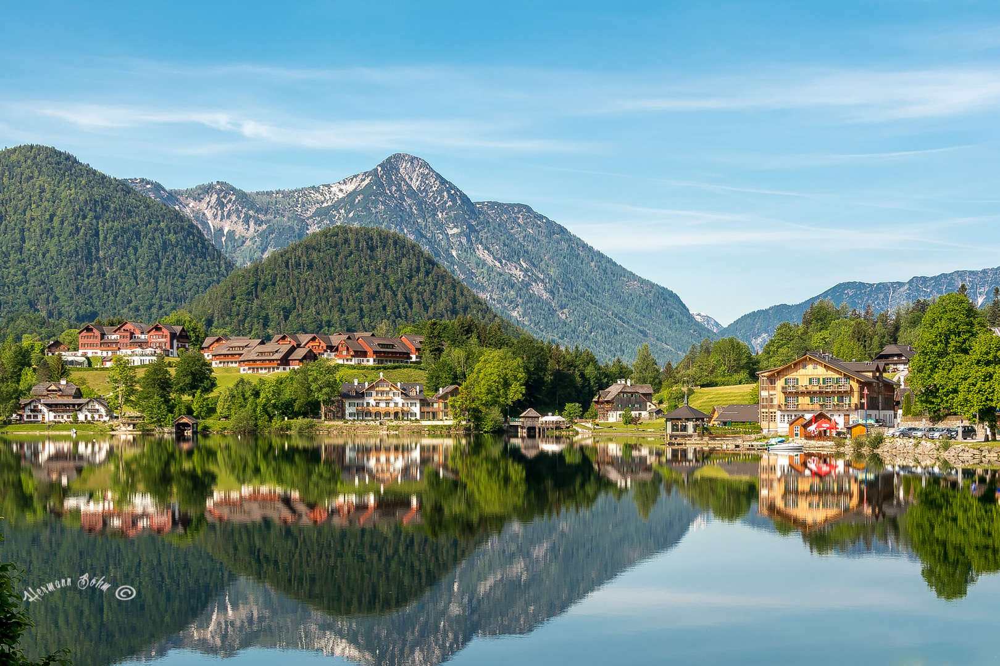
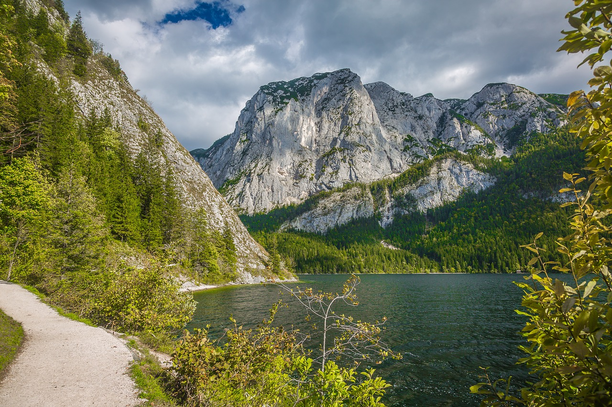

Grundlsee
Der Grundlsee, oft als "Steirisches Meer" bezeichnet, ist mit einer Fläche von 4,22km²
der größte See der Steiermark und liegt im malerischen Ausseerland-Salzkammergut.
Öffentliche Badeplätze und freie Seezugänge am Grundlsee
-
Badestrand in Gößl: Am südlichen Ende des
Sees gelegen, bietet dieser Strandbereich eine großzügige
Liegewiese und direkten Zugang zum Wasser.
-
Badestrand in Grundlsee: In der Nähe
des Ortes Grundlsee gibt es einen öffentlichen Badebereich
mit Liegewiese und Zugang zum See.
-
Badestrand in Bad Aussee: Am westlichen Ende
des Sees befindet sich ein weiterer öffentlicher Badebereich mit
Liegewiese und direktem Zugang zum Wasser.

Altausseer See
Der Altausseer See ist ein malerischer Bergsee im steirischen
Salzkammergut, umrahmt von den Ausläufern des Dachsteinmassivs
und der Trisselwand. Mit einer Fläche von etwa 2,5km² und
einer maximalen Tiefe von 16 Metern bietet er eine idyllische
Kulisse für Erholungssuchende.
Öffentliche Badeplätze und freie Seezugänge
Der Altausseer See ist
grundsätzlich frei zugänglich. Entlang des Uferwanderweges gibt
es mehrere öffentlich zugängliche Badestellen, die zum Schwimmen
und Entspannen einladen. Besonders beliebt ist die Seewiese, die
einen großzügigen Liegebereich und direkten Zugang zum Wasser bietet.
Aktivitäten am Altausseer See
-
Wandern und Radfahren: Der rund 6 Kilometer
lange Uferwanderweg um den See ist ideal für Spaziergänge und
Radtouren. Er bietet atemberaubende Ausblicke auf die umliegende
Bergwelt und führt durch idyllische Landschaften.
-
Bootfahren: Der See eignet sich hervorragend
für ruhige Bootstouren. Mehrere Anbieter bieten Bootsverleih
an, sodass Sie den See aus einer anderen Perspektive erleben können.
-
Angeln: Der Altausseer See ist ein
beliebtes Ziel für Angler. Hier können verschiedene Fischarten gefangen werden.
